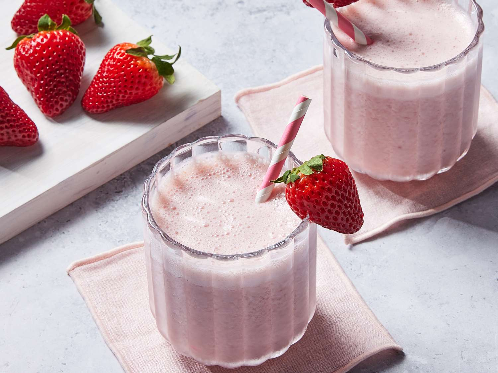

New recipe today!
🍓 Strawberries moothie
Description
A healthy and refreshing moothie made with fresh strawberries, banana, and yogurt.
Ingredients
- 1 cup fresh strawberries
- 1 banana
- 1/2 cup yogurt
- 1/2 cup milk
- 1/2 teaspoon vanilla extract
A healthy and refreshing moothie made with fresh strawberries, banana, and yogurt.